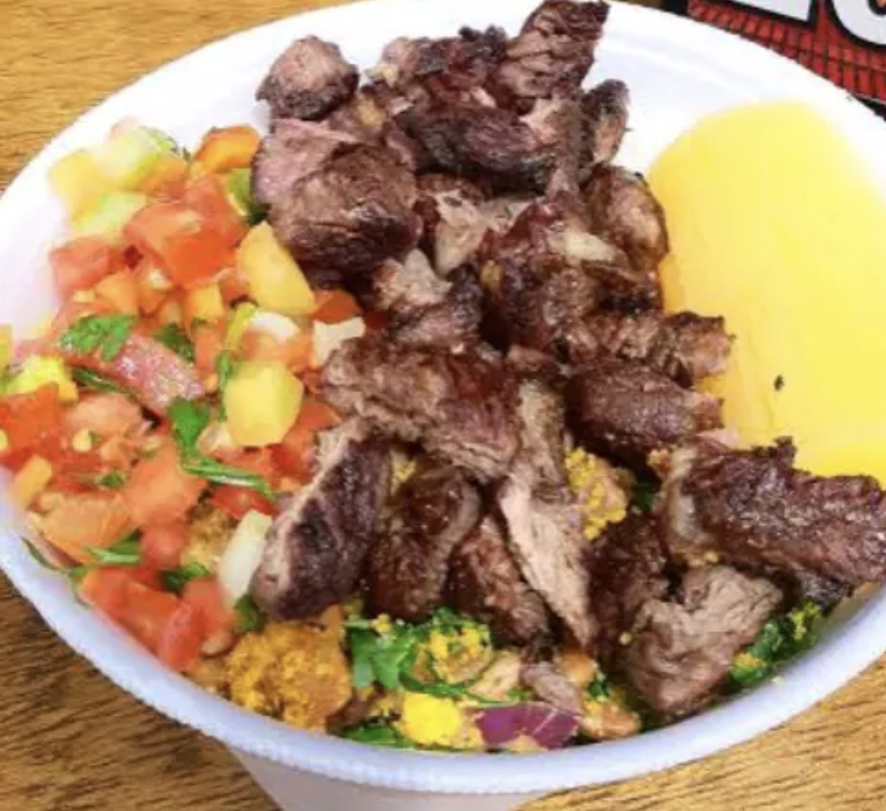

Curiosidades da Casa
Histórias que Marcaram

O Prato Campeão
Nossa marmita com churrasco é o mais pedido da casa e conquista clientes há anos com sabor e fartura.

Receitas de Família
Algumas das receitas do cardápio foram inspiradas em cadernos culinários passados entre gerações da família.

Onde Tudo Começou
O restaurante iniciou suas atividades em um pequeno espaço com apenas 12 mesas — e muito tempero goiano.
Cada receita conta uma história, e cada cliente faz parte dela.
Números que Orgulham
Mais de 50 mil pratos servidos
Ao longo dos anos ultrapassamos a marca de cinquenta mil refeições preparadas com carinho e qualidade.
Café da Casa
Em datas especiais oferecemos café goiano fresquinho e gratuito para todos os clientes após a refeição.
Aniversariantes Ganham Sobremesa
Quem comemora aniversário no restaurante recebe uma sobremesa especial preparada com carinho pela equipe.
Muito além da comida, buscamos criar experiências e momentos especiais para cada cliente.